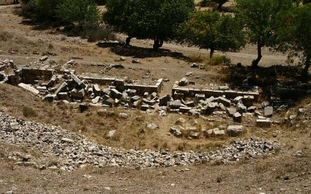
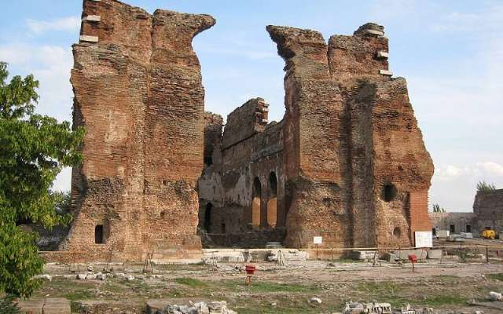
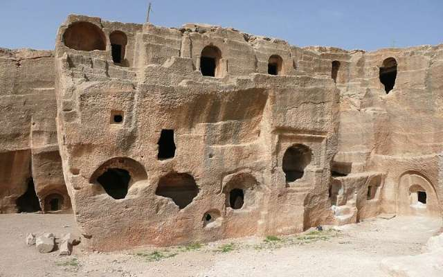

ما قبل التاريخ والعصر الحجري الحديث
ق.م 12.000 – 3000 · 8 مكانًا
 موقع أرسلان تبه الأثريملطية · العصر النحاسي / العصر البرونزي / الحيثي المتأخر
موقع أرسلان تبه الأثريملطية · العصر النحاسي / العصر البرونزي / الحيثي المتأخر غوبكلي تبهشانلي أورفا · العصر الحجري الحديث
غوبكلي تبهشانلي أورفا · العصر الحجري الحديث موقع تشاتال هويوك الأثريقونية · العصر الحجري الحديث
موقع تشاتال هويوك الأثريقونية · العصر الحجري الحديث تل آشيقليآق سراي · العصر الحجري الحديث
تل آشيقليآق سراي · العصر الحجري الحديث موقع قره هان تبه الأثريشانلي أورفا · العصر الحجري الحديث
موقع قره هان تبه الأثريشانلي أورفا · العصر الحجري الحديث كهف قره إينأنطاليا · العصر الحجري القديممتحف قرقلر ايليقرقلر ايلي · ما قبل التاريخ / تراقيمتحف شانلي أورفا الأثريشانلي أورفا · العصر الحجري الحديث – عثماني
كهف قره إينأنطاليا · العصر الحجري القديممتحف قرقلر ايليقرقلر ايلي · ما قبل التاريخ / تراقيمتحف شانلي أورفا الأثريشانلي أورفا · العصر الحجري الحديث – عثمانيالعصر البرونزي والحيثيون
ق.م 3000 – 1200 · 16 مكانًا
موقع أرسلان تبه الأثريملطية · العصر النحاسي / العصر البرونزي / الحيثي المتأخر حاتوشاجوروم · حيثي
حاتوشاجوروم · حيثي طروادةجناق قلعة · العصر البرونزي / روماني
طروادةجناق قلعة · العصر البرونزي / روماني متحف وموقع ألاجا هويوك الأثريجوروم · العصر البرونزي / حيثي
متحف وموقع ألاجا هويوك الأثريجوروم · العصر البرونزي / حيثي موقع إنكومي (ألاسيا) الأثريغازي ماغوسا (فاماغوستا) · العصر البرونزي
موقع إنكومي (ألاسيا) الأثريغازي ماغوسا (فاماغوستا) · العصر البرونزي موقع تلوس الأثري (فتحية)موغلا · العصر البرونزي – عثماني
موقع تلوس الأثري (فتحية)موغلا · العصر البرونزي – عثماني موقع حران الأثريشانلي أورفا · العصر البرونزي – العصور الوسطى
موقع حران الأثريشانلي أورفا · العصر البرونزي – العصور الوسطى موقع ياسوس الأثريموغلا · العصر البرونزي – بيزنطي
موقع ياسوس الأثريموغلا · العصر البرونزي – بيزنطي متحف قامان قلعة هويوك الأثريقير شهر · العصر البرونزي / العصر الحديدي
متحف قامان قلعة هويوك الأثريقير شهر · العصر البرونزي / العصر الحديدي متحف وموقع قره تبه – أصلان طاشعثمانية · الحيثي المتأخر (القرن 8 ق.م)
متحف وموقع قره تبه – أصلان طاشعثمانية · الحيثي المتأخر (القرن 8 ق.م) موقع كول تبه الأثريقيصري · العصر البرونزي
موقع كول تبه الأثريقيصري · العصر البرونزي موقع سلاميس الأثريغازي ماغوسا (فاماغوستا) · العصر البرونزي / روماني / بيزنطي
موقع سلاميس الأثريغازي ماغوسا (فاماغوستا) · العصر البرونزي / روماني / بيزنطي موقع يسمك الأثريغازي عنتاب · الحيثي المتأخر
موقع يسمك الأثريغازي عنتاب · الحيثي المتأخر متحف بودروم لآثار ما تحت الماءموغلا · العصر البرونزي – عثماني
متحف بودروم لآثار ما تحت الماءموغلا · العصر البرونزي – عثماني متحف بوغاز كويجوروم · حيثيمتحف شانلي أورفا الأثريشانلي أورفا · العصر الحجري الحديث – عثماني
متحف بوغاز كويجوروم · حيثيمتحف شانلي أورفا الأثريشانلي أورفا · العصر الحجري الحديث – عثمانيممالك العصر الحديدي
ق.م 1200 – 550 · 38 مكانًا
موقع أرسلان تبه الأثريملطية · العصر النحاسي / العصر البرونزي / الحيثي المتأخر موقع زانثوس الأثريأنطاليا · ليكي
موقع زانثوس الأثريأنطاليا · ليكي متحف غورديونأنقرة · فريجي
متحف غورديونأنقرة · فريجي مقبرة أمينتاس الصخريةموغلا · ليكي (القرن 4 ق.م)
مقبرة أمينتاس الصخريةموغلا · ليكي (القرن 4 ق.م) موقع أريكاندا الأثريأنطاليا · ليكي / روماني
موقع أريكاندا الأثريأنطاليا · ليكي / روماني موقع ليتون الأثري في فتحيةموغلا · ليكي / روماني
موقع ليتون الأثري في فتحيةموغلا · ليكي / روماني موقع بينارا الأثري في فتحيةموغلا · ليكي / رومانيموقع تلوس الأثري (فتحية)موغلا · العصر البرونزي – عثماني
موقع بينارا الأثري في فتحيةموغلا · ليكي / رومانيموقع تلوس الأثري (فتحية)موغلا · العصر البرونزي – عثماني قلعة خربوطإلازيغ · أورارتي / العصور الوسطىموقع حران الأثريشانلي أورفا · العصر البرونزي – العصور الوسطىموقع ياسوس الأثريموغلا · العصر البرونزي – بيزنطيمتحف قامان قلعة هويوك الأثريقير شهر · العصر البرونزي / العصر الحديديمتحف وموقع قره تبه – أصلان طاشعثمانية · الحيثي المتأخر (القرن 8 ق.م)
قلعة خربوطإلازيغ · أورارتي / العصور الوسطىموقع حران الأثريشانلي أورفا · العصر البرونزي – العصور الوسطىموقع ياسوس الأثريموغلا · العصر البرونزي – بيزنطيمتحف قامان قلعة هويوك الأثريقير شهر · العصر البرونزي / العصر الحديديمتحف وموقع قره تبه – أصلان طاشعثمانية · الحيثي المتأخر (القرن 8 ق.م) موقع كاونوس الأثريموغلا · كاري / هلنستي / رومانيمتحف وموقع المقابر الملكيةغازي ماغوسا (فاماغوستا) · العصر الحديدي (القرن 8–7 ق.م)
موقع كاونوس الأثريموغلا · كاري / هلنستي / رومانيمتحف وموقع المقابر الملكيةغازي ماغوسا (فاماغوستا) · العصر الحديدي (القرن 8–7 ق.م) موقع لابراوندا الأثريموغلا · كاري / هلنستي
موقع لابراوندا الأثريموغلا · كاري / هلنستي متحف الحضارات الليكية وموقع أندرياكي الأثريأنطاليا · ليكي / روماني
متحف الحضارات الليكية وموقع أندرياكي الأثريأنطاليا · ليكي / روماني موقع ليميرا الأثريأنطاليا · ليكي / روماني
موقع ليميرا الأثريأنطاليا · ليكي / روماني موقع مدينة ميداس الأثري (يازيلي قايا)إسكي شهر · فريجي
موقع مدينة ميداس الأثري (يازيلي قايا)إسكي شهر · فريجي مجمع ضريح أوزونيوفا والمتحف (ميلاس)موغلا · كاري (القرن 4 ق.م)
مجمع ضريح أوزونيوفا والمتحف (ميلاس)موغلا · كاري (القرن 4 ق.م) موقع ميرا الأثريأنطاليا · ليكي / روماني
موقع ميرا الأثريأنطاليا · ليكي / روماني موقع أوليمبوس الأثريأنطاليا · ليكي / روماني
موقع أوليمبوس الأثريأنطاليا · ليكي / روماني موقع باتارا الأثريأنطاليا · ليكي / روماني
موقع باتارا الأثريأنطاليا · ليكي / روماني موقع بيسينوس الأثريإسكي شهر · فريجي / هلنستي / روماني
موقع بيسينوس الأثريإسكي شهر · فريجي / هلنستي / روماني موقع فاسيليس الأثريأنطاليا · ليكي / روماني
موقع فاسيليس الأثريأنطاليا · ليكي / روماني موقع سارديس الأثريمانيسا · ليدي / روماني
موقع سارديس الأثريمانيسا · ليدي / روماني موقع سيمينا الأثريأنطاليا · ليكي / بيزنطي
موقع سيمينا الأثريأنطاليا · ليكي / بيزنطي قلعة وانوان · أورارتي – عثمانيموقع يسمك الأثريغازي عنتاب · الحيثي المتأخر
قلعة وانوان · أورارتي – عثمانيموقع يسمك الأثريغازي عنتاب · الحيثي المتأخر قلعة تشاوش تبهوان · أورارتي (القرن 8–7 ق.م)متحف بودروم لآثار ما تحت الماءموغلا · العصر البرونزي – عثماني
قلعة تشاوش تبهوان · أورارتي (القرن 8–7 ق.م)متحف بودروم لآثار ما تحت الماءموغلا · العصر البرونزي – عثماني متحف أرزنجانأرزنجان · أورارتي / متعدد الحقبمتحف فتحيةموغلا · ليكي / رومانيمتحف قرقلر ايليقرقلر ايلي · ما قبل التاريخ / تراقي
متحف أرزنجانأرزنجان · أورارتي / متعدد الحقبمتحف فتحيةموغلا · ليكي / رومانيمتحف قرقلر ايليقرقلر ايلي · ما قبل التاريخ / تراقي متحف ضريح موسولوس التذكاري في بودرومموغلا · كاري (القرن 4 ق.م)متحف أوشاكعشاق · ليدي / متعدد الحقب
متحف ضريح موسولوس التذكاري في بودرومموغلا · كاري (القرن 4 ق.م)متحف أوشاكعشاق · ليدي / متعدد الحقب متحف وانوان · أورارتي / متعدد الحقبمتحف شانلي أورفا الأثريشانلي أورفا · العصر الحجري الحديث – عثماني
متحف وانوان · أورارتي / متعدد الحقبمتحف شانلي أورفا الأثريشانلي أورفا · العصر الحجري الحديث – عثمانيالعصران الكلاسيكي والهلنستي
ق.م 550 – 30 · 61 مكانًا
 متحف وموقع أفروديسياس الأثريآيدن · هلنستي / روماني
متحف وموقع أفروديسياس الأثريآيدن · هلنستي / روماني أكروبوليس برغامومإزمير · هلنستي / روماني
أكروبوليس برغامومإزمير · هلنستي / روماني موقع أسكليبيون برغاموم الأثريإزمير · هلنستي / روماني
موقع أسكليبيون برغاموم الأثريإزمير · هلنستي / روماني أفسسإزمير · هلنستي / روماني
أفسسإزمير · هلنستي / روماني موقع هيرابوليس الأثري (باموكالي)دنيزلي · هلنستي / روماني
موقع هيرابوليس الأثري (باموكالي)دنيزلي · هلنستي / روماني جبل نمرودأديامان · هلنستي (كوماجيني)
جبل نمرودأديامان · هلنستي (كوماجيني) موقع أغورا سميرنا الأثريإزمير · هلنستي / رومانيموقع أيغاي الأثريمانيسا · هلنستي / روماني
موقع أغورا سميرنا الأثريإزمير · هلنستي / رومانيموقع أيغاي الأثريمانيسا · هلنستي / روماني موقع ألاباندا الأثريآيدن · هلنستي / روماني
موقع ألاباندا الأثريآيدن · هلنستي / روماني موقع آلاشهير الأثري (فيلادلفيا)مانيسا · هلنستي / بيزنطي
موقع آلاشهير الأثري (فيلادلفيا)مانيسا · هلنستي / بيزنطي موقع الإسكندرية ترواس الأثريجناق قلعة · هلنستي / روماني
موقع الإسكندرية ترواس الأثريجناق قلعة · هلنستي / روماني موقع أليندا الأثريآيدن · هلنستي / روماني
موقع أليندا الأثريآيدن · هلنستي / روماني مدينة سيدرا القديمةأنطاليا · هلنستي / روماني
مدينة سيدرا القديمةأنطاليا · هلنستي / روماني موقع أنطاكية بيسيديا الأثريإسبرطة · هلنستي / روماني
موقع أنطاكية بيسيديا الأثريإسبرطة · هلنستي / روماني موقع معبد أبولو سمينثيوسجناق قلعة · هلنستي
موقع معبد أبولو سمينثيوسجناق قلعة · هلنستي موقع أرساميا الأثريأديامان · هلنستي (كوماجيني)
موقع أرساميا الأثريأديامان · هلنستي (كوماجيني) موقع أسوس الأثريجناق قلعة · العصر القديم (الأركايكي) / هلنستي
موقع أسوس الأثريجناق قلعة · العصر القديم (الأركايكي) / هلنستي موقع بلاوندوس الأثريعشاق · هلنستي / روماني
موقع بلاوندوس الأثريعشاق · هلنستي / روماني مسرح بودروم القديمموغلا · هلنستي / روماني
مسرح بودروم القديمموغلا · هلنستي / روماني موقع تريبوليس الأثريدنيزلي · هلنستي / روماني
موقع تريبوليس الأثريدنيزلي · هلنستي / روماني معبد أبولو في ديديمآيدن · هلنستي / رومانيموقع تلوس الأثري (فتحية)موغلا · العصر البرونزي – عثمانيموقع فيليوس (تيوس) الأثريزونغولداق · هلنستي – بيزنطيموقع حران الأثريشانلي أورفا · العصر البرونزي – العصور الوسطىموقع ياسوس الأثريموغلا · العصر البرونزي – بيزنطي
معبد أبولو في ديديمآيدن · هلنستي / رومانيموقع تلوس الأثري (فتحية)موغلا · العصر البرونزي – عثمانيموقع فيليوس (تيوس) الأثريزونغولداق · هلنستي – بيزنطيموقع حران الأثريشانلي أورفا · العصر البرونزي – العصور الوسطىموقع ياسوس الأثريموغلا · العصر البرونزي – بيزنطي قلعة يني قلعة في كاهتاأديامان · كوماجيني / العصور الوسطى
قلعة يني قلعة في كاهتاأديامان · كوماجيني / العصور الوسطى موقع قانلي ديوانه الأثريمرسين · هلنستي / روماني / بيزنطي
موقع قانلي ديوانه الأثريمرسين · هلنستي / روماني / بيزنطي موقع كاستابالا الأثريعثمانية · هلنستي / روماني / العصور الوسطىموقع كاونوس الأثريموغلا · كاري / هلنستي / روماني
موقع كاستابالا الأثريعثمانية · هلنستي / روماني / العصور الوسطىموقع كاونوس الأثريموغلا · كاري / هلنستي / روماني موقع كلاروس الأثريإزمير · العصر القديم (الأركايكي) / رومانيموقع كلازوميناي الأثريإزمير · العصر القديم (الأركايكي)موقع لابراوندا الأثريموغلا · كاري / هلنستي
موقع كلاروس الأثريإزمير · العصر القديم (الأركايكي) / رومانيموقع كلازوميناي الأثريإزمير · العصر القديم (الأركايكي)موقع لابراوندا الأثريموغلا · كاري / هلنستي موقع لاغينا الأثريموغلا · هلنستي / روماني
موقع لاغينا الأثريموغلا · هلنستي / روماني موقع لاودكية الأثريدنيزلي · هلنستي / روماني
موقع لاودكية الأثريدنيزلي · هلنستي / روماني موقع ماغنيسيا الأثريآيدن · هلنستي / روماني
موقع ماغنيسيا الأثريآيدن · هلنستي / روماني متحف آق حصار ومقبرة تبه في مانيسامانيسا · هلنستي / روماني
متحف آق حصار ومقبرة تبه في مانيسامانيسا · هلنستي / روماني موقع ميتروبوليس الأثريإزمير · هلنستي / روماني
موقع ميتروبوليس الأثريإزمير · هلنستي / روماني موقع يوروموس الأثري في ميلاسموغلا · هلنستي / روماني
موقع يوروموس الأثري في ميلاسموغلا · هلنستي / روماني موقع ميليتوس الأثريآيدن · العصر القديم (الأركايكي) / روماني
موقع ميليتوس الأثريآيدن · العصر القديم (الأركايكي) / روماني موقع كنيدوس الأثريموغلا · كلاسيكي / هلنستي
موقع كنيدوس الأثريموغلا · كلاسيكي / هلنستي موقع نيسا الأثري (سلطان حصار)آيدن · هلنستي / روماني
موقع نيسا الأثري (سلطان حصار)آيدن · هلنستي / روماني موقع بيرغه الأثريأنطاليا · هلنستي / روماني
موقع بيرغه الأثريأنطاليا · هلنستي / روماني موقع بيري الأثريأديامان · كوماجيني / رومانيموقع بيسينوس الأثريإسكي شهر · فريجي / هلنستي / روماني
موقع بيري الأثريأديامان · كوماجيني / رومانيموقع بيسينوس الأثريإسكي شهر · فريجي / هلنستي / روماني موقع برييني الأثريآيدن · هلنستي
موقع برييني الأثريآيدن · هلنستي موقع ساغالاسوس الأثريبوردور · هلنستي / روماني
موقع ساغالاسوس الأثريبوردور · هلنستي / روماني جزيرة سيدير (كيدرياي)موغلا · هلنستي / روماني
جزيرة سيدير (كيدرياي)موغلا · هلنستي / روماني موقع سيده الأثريأنطاليا · هلنستي / رومانيضريح صوفراز التذكاريأديامان · هلنستي / روماني
موقع سيده الأثريأنطاليا · هلنستي / رومانيضريح صوفراز التذكاريأديامان · هلنستي / روماني موقع سولي الأثريليفكه (ليفكا) · العصر القديم (الأركايكي) / روماني
موقع سولي الأثريليفكه (ليفكا) · العصر القديم (الأركايكي) / روماني موقع ستراتونيكيا الأثريموغلا · هلنستي – عثماني
موقع ستراتونيكيا الأثريموغلا · هلنستي – عثماني
موقع تيوس الأثريإزمير · العصر القديم (الأركايكي) / هلنستي موقع ترميسوس الأثريأنطاليا · هلنستي / روماني
موقع ترميسوس الأثريأنطاليا · هلنستي / روماني موقع أوزونجه بورج الأثريمرسين · هلنستي / رومانيقلعة وانوان · أورارتي – عثماني
موقع أوزونجه بورج الأثريمرسين · هلنستي / رومانيقلعة وانوان · أورارتي – عثماني قصر فونيليفكه (ليفكا) · كلاسيكي (القرن 5 ق.م)
قصر فونيليفكه (ليفكا) · كلاسيكي (القرن 5 ق.م) موقع زيوغما الأثريغازي عنتاب · هلنستي / رومانيموقع تشفليك الأثريهاتاي · هلنستي / روماني
موقع زيوغما الأثريغازي عنتاب · هلنستي / رومانيموقع تشفليك الأثريهاتاي · هلنستي / روماني قلعة شانلي أورفاشانلي أورفا · هلنستي – العصور الوسطىمتحف بودروم لآثار ما تحت الماءموغلا · العصر البرونزي – عثمانيمتحف شانلي أورفا الأثريشانلي أورفا · العصر الحجري الحديث – عثماني
قلعة شانلي أورفاشانلي أورفا · هلنستي – العصور الوسطىمتحف بودروم لآثار ما تحت الماءموغلا · العصر البرونزي – عثمانيمتحف شانلي أورفا الأثريشانلي أورفا · العصر الحجري الحديث – عثمانيالعصر الروماني
ق.م 30 – م 330 · 86 مكانًا
متحف وموقع أفروديسياس الأثريآيدن · هلنستي / رومانيأكروبوليس برغامومإزمير · هلنستي / رومانيموقع أسكليبيون برغاموم الأثريإزمير · هلنستي / روماني
البازيليكا الحمراء في برغامةإزمير · روماني / بيزنطيأفسسإزمير · هلنستي / رومانيموقع هيرابوليس الأثري (باموكالي)دنيزلي · هلنستي / رومانيطروادةجناق قلعة · العصر البرونزي / رومانيموقع أغورا سميرنا الأثريإزمير · هلنستي / رومانيموقع أيغاي الأثريمانيسا · هلنستي / روماني موقع أيزانوي الأثريكوتاهية · رومانيموقع ألاباندا الأثريآيدن · هلنستي / رومانيموقع الإسكندرية ترواس الأثريجناق قلعة · هلنستي / رومانيموقع أليندا الأثريآيدن · هلنستي / روماني
موقع أيزانوي الأثريكوتاهية · رومانيموقع ألاباندا الأثريآيدن · هلنستي / رومانيموقع الإسكندرية ترواس الأثريجناق قلعة · هلنستي / رومانيموقع أليندا الأثريآيدن · هلنستي / روماني موقع أنافارزا الأثريأضنة · روماني / بيزنطي
موقع أنافارزا الأثريأضنة · روماني / بيزنطي موقع أنيموريوم الأثريمرسين · روماني / بيزنطيمدينة سيدرا القديمةأنطاليا · هلنستي / رومانيموقع أنطاكية بيسيديا الأثريإسبرطة · هلنستي / رومانيموقع أريكاندا الأثريأنطاليا · ليكي / روماني
موقع أنيموريوم الأثريمرسين · روماني / بيزنطيمدينة سيدرا القديمةأنطاليا · هلنستي / رومانيموقع أنطاكية بيسيديا الأثريإسبرطة · هلنستي / رومانيموقع أريكاندا الأثريأنطاليا · ليكي / روماني أسبندوسأنطاليا · رومانيموقع بلاوندوس الأثريعشاق · هلنستي / رومانيمسرح بودروم القديمموغلا · هلنستي / رومانيموقع تريبوليس الأثريدنيزلي · هلنستي / رومانيمعبد أبولو في ديديمآيدن · هلنستي / روماني
أسبندوسأنطاليا · رومانيموقع بلاوندوس الأثريعشاق · هلنستي / رومانيمسرح بودروم القديمموغلا · هلنستي / رومانيموقع تريبوليس الأثريدنيزلي · هلنستي / رومانيمعبد أبولو في ديديمآيدن · هلنستي / روماني البرج المقدوني في أدرنةأدرنة · روماني / بيزنطي / عثماني
البرج المقدوني في أدرنةأدرنة · روماني / بيزنطي / عثماني بيوت المنحدر في أفسسإزمير · روماني / بيزنطيموقع ليتون الأثري في فتحيةموغلا · ليكي / رومانيموقع بينارا الأثري في فتحيةموغلا · ليكي / رومانيموقع تلوس الأثري (فتحية)موغلا · العصر البرونزي – عثمانيموقع فيليوس (تيوس) الأثريزونغولداق · هلنستي – بيزنطيمنطقة فسيفساء جرمانيكياقهرمان مرعش · رومانيموقع هادريانوبوليس الأثريكارابوك · روماني / بيزنطيموقع حران الأثريشانلي أورفا · العصر البرونزي – العصور الوسطىموقع ياسوس الأثريموغلا · العصر البرونزي – بيزنطيموقع قانلي ديوانه الأثريمرسين · هلنستي / روماني / بيزنطيموقع كاستابالا الأثريعثمانية · هلنستي / روماني / العصور الوسطىموقع كاونوس الأثريموغلا · كاري / هلنستي / روماني
بيوت المنحدر في أفسسإزمير · روماني / بيزنطيموقع ليتون الأثري في فتحيةموغلا · ليكي / رومانيموقع بينارا الأثري في فتحيةموغلا · ليكي / رومانيموقع تلوس الأثري (فتحية)موغلا · العصر البرونزي – عثمانيموقع فيليوس (تيوس) الأثريزونغولداق · هلنستي – بيزنطيمنطقة فسيفساء جرمانيكياقهرمان مرعش · رومانيموقع هادريانوبوليس الأثريكارابوك · روماني / بيزنطيموقع حران الأثريشانلي أورفا · العصر البرونزي – العصور الوسطىموقع ياسوس الأثريموغلا · العصر البرونزي – بيزنطيموقع قانلي ديوانه الأثريمرسين · هلنستي / روماني / بيزنطيموقع كاستابالا الأثريعثمانية · هلنستي / روماني / العصور الوسطىموقع كاونوس الأثريموغلا · كاري / هلنستي / روماني موقع كيبيرا الأثريبوردور · رومانيموقع كلاروس الأثريإزمير · العصر القديم (الأركايكي) / رومانيموقع لاغينا الأثريموغلا · هلنستي / رومانيموقع لاودكية الأثريدنيزلي · هلنستي / رومانيمتحف الحضارات الليكية وموقع أندرياكي الأثريأنطاليا · ليكي / رومانيموقع ليميرا الأثريأنطاليا · ليكي / رومانيموقع ماغنيسيا الأثريآيدن · هلنستي / رومانيمتحف آق حصار ومقبرة تبه في مانيسامانيسا · هلنستي / رومانيموقع ميتروبوليس الأثريإزمير · هلنستي / رومانيموقع يوروموس الأثري في ميلاسموغلا · هلنستي / رومانيموقع ميليتوس الأثريآيدن · العصر القديم (الأركايكي) / رومانيموقع ميرا الأثريأنطاليا · ليكي / رومانيموقع أنداوال الأثري (نيغده)نيغدة · روماني / بيزنطيموقع نيسا الأثري (سلطان حصار)آيدن · هلنستي / رومانيموقع أوليمبوس الأثريأنطاليا · ليكي / رومانيموقع باتارا الأثريأنطاليا · ليكي / رومانيموقع بيرغه الأثريأنطاليا · هلنستي / رومانيموقع بيري الأثريأديامان · كوماجيني / رومانيموقع بيسينوس الأثريإسكي شهر · فريجي / هلنستي / رومانيموقع فاسيليس الأثريأنطاليا · ليكي / روماني
موقع كيبيرا الأثريبوردور · رومانيموقع كلاروس الأثريإزمير · العصر القديم (الأركايكي) / رومانيموقع لاغينا الأثريموغلا · هلنستي / رومانيموقع لاودكية الأثريدنيزلي · هلنستي / رومانيمتحف الحضارات الليكية وموقع أندرياكي الأثريأنطاليا · ليكي / رومانيموقع ليميرا الأثريأنطاليا · ليكي / رومانيموقع ماغنيسيا الأثريآيدن · هلنستي / رومانيمتحف آق حصار ومقبرة تبه في مانيسامانيسا · هلنستي / رومانيموقع ميتروبوليس الأثريإزمير · هلنستي / رومانيموقع يوروموس الأثري في ميلاسموغلا · هلنستي / رومانيموقع ميليتوس الأثريآيدن · العصر القديم (الأركايكي) / رومانيموقع ميرا الأثريأنطاليا · ليكي / رومانيموقع أنداوال الأثري (نيغده)نيغدة · روماني / بيزنطيموقع نيسا الأثري (سلطان حصار)آيدن · هلنستي / رومانيموقع أوليمبوس الأثريأنطاليا · ليكي / رومانيموقع باتارا الأثريأنطاليا · ليكي / رومانيموقع بيرغه الأثريأنطاليا · هلنستي / رومانيموقع بيري الأثريأديامان · كوماجيني / رومانيموقع بيسينوس الأثريإسكي شهر · فريجي / هلنستي / رومانيموقع فاسيليس الأثريأنطاليا · ليكي / روماني الحمامات الرومانية في أنقرةأنقرة · رومانيموقع ساغالاسوس الأثريبوردور · هلنستي / رومانيموقع سلاميس الأثريغازي ماغوسا (فاماغوستا) · العصر البرونزي / روماني / بيزنطيموقع سارديس الأثريمانيسا · ليدي / روماني
الحمامات الرومانية في أنقرةأنقرة · رومانيموقع ساغالاسوس الأثريبوردور · هلنستي / رومانيموقع سلاميس الأثريغازي ماغوسا (فاماغوستا) · العصر البرونزي / روماني / بيزنطيموقع سارديس الأثريمانيسا · ليدي / روماني حمّام صاري قايا الرومانييوزغات · رومانيجزيرة سيدير (كيدرياي)موغلا · هلنستي / رومانيموقع سيده الأثريأنطاليا · هلنستي / رومانيموقع سوبيسوس الأثرينوشهر · روماني / بيزنطيضريح صوفراز التذكاريأديامان · هلنستي / رومانيموقع سولي الأثريليفكه (ليفكا) · العصر القديم (الأركايكي) / رومانيموقع ستراتونيكيا الأثريموغلا · هلنستي – عثماني
حمّام صاري قايا الرومانييوزغات · رومانيجزيرة سيدير (كيدرياي)موغلا · هلنستي / رومانيموقع سيده الأثريأنطاليا · هلنستي / رومانيموقع سوبيسوس الأثرينوشهر · روماني / بيزنطيضريح صوفراز التذكاريأديامان · هلنستي / رومانيموقع سولي الأثريليفكه (ليفكا) · العصر القديم (الأركايكي) / رومانيموقع ستراتونيكيا الأثريموغلا · هلنستي – عثماني بئر القديس بولس في طرسوسمرسين · روماني / المسيحية المبكرةموقع ترميسوس الأثريأنطاليا · هلنستي / رومانيموقع أوزونجه بورج الأثريمرسين · هلنستي / رومانيقلعة وانوان · أورارتي – عثمانيموقع زيوغما الأثريغازي عنتاب · هلنستي / رومانيموقع تشفليك الأثريهاتاي · هلنستي / رومانيقلعة شانلي أورفاشانلي أورفا · هلنستي – العصور الوسطىمتحف بودروم لآثار ما تحت الماءموغلا · العصر البرونزي – عثمانيمتحف فتحيةموغلا · ليكي / روماني
بئر القديس بولس في طرسوسمرسين · روماني / المسيحية المبكرةموقع ترميسوس الأثريأنطاليا · هلنستي / رومانيموقع أوزونجه بورج الأثريمرسين · هلنستي / رومانيقلعة وانوان · أورارتي – عثمانيموقع زيوغما الأثريغازي عنتاب · هلنستي / رومانيموقع تشفليك الأثريهاتاي · هلنستي / رومانيقلعة شانلي أورفاشانلي أورفا · هلنستي – العصور الوسطىمتحف بودروم لآثار ما تحت الماءموغلا · العصر البرونزي – عثمانيمتحف فتحيةموغلا · ليكي / روماني متحف فسيفساء حلبي باغجهشانلي أورفا · روماني / بيزنطي
متحف فسيفساء حلبي باغجهشانلي أورفا · روماني / بيزنطي متحف هاتاي الأثريهاتاي · روماني / متعدد الحقب
متحف هاتاي الأثريهاتاي · روماني / متعدد الحقب متحف هيرابوليس الأثري (باموكالي)دنيزلي · رومانيمتحف قوجه ايلي الأثريقوجه ايلي · روماني / متعدد الحقب
متحف هيرابوليس الأثري (باموكالي)دنيزلي · رومانيمتحف قوجه ايلي الأثريقوجه ايلي · روماني / متعدد الحقب متحف قونور ألبدوزجه · روماني
متحف قونور ألبدوزجه · روماني متحف سيدهأنطاليا · روماني
متحف سيدهأنطاليا · روماني متحف نارلي كويو للفسيفساء في سيليفكهمرسين · روماني
متحف نارلي كويو للفسيفساء في سيليفكهمرسين · روماني متحف يالواجإسبرطة · روماني / متعدد الحقب
متحف يالواجإسبرطة · روماني / متعدد الحقب متحف زيوغما للفسيفساءغازي عنتاب · رومانيمتحف شانلي أورفا الأثريشانلي أورفا · العصر الحجري الحديث – عثماني
متحف زيوغما للفسيفساءغازي عنتاب · رومانيمتحف شانلي أورفا الأثريشانلي أورفا · العصر الحجري الحديث – عثمانيالبيزنطيون والعصور الوسطى
330 – 1453 · 90 مكانًا
 موقع آني الأثريقارص · العصور الوسطىالبازيليكا الحمراء في برغامةإزمير · روماني / بيزنطي
موقع آني الأثريقارص · العصور الوسطىالبازيليكا الحمراء في برغامةإزمير · روماني / بيزنطي مدينة ديرينكويو تحت الأرضنوشهر · بيزنطي
مدينة ديرينكويو تحت الأرضنوشهر · بيزنطي كنيسة النظرنوشهر · بيزنطي (القرن 10)
كنيسة النظرنوشهر · بيزنطي (القرن 10) متحف غوريمي المفتوحنوشهر · بيزنطي (القرن 9–12)
متحف غوريمي المفتوحنوشهر · بيزنطي (القرن 9–12) الكنيسة المظلمة (غوريمي)نوشهر · بيزنطي (القرن 11)
الكنيسة المظلمة (غوريمي)نوشهر · بيزنطي (القرن 11) مدينة قايماقلي تحت الأرضنوشهر · بيزنطي
مدينة قايماقلي تحت الأرضنوشهر · بيزنطي موقع زلفه وباشا باغلارينوشهر · بيزنطي / عثماني
موقع زلفه وباشا باغلارينوشهر · بيزنطي / عثماني تشافوشين (كنيسة تشافوشين)نوشهر · بيزنطيوادي الأديرة في آق سرايآق سراي · بيزنطي
تشافوشين (كنيسة تشافوشين)نوشهر · بيزنطيوادي الأديرة في آق سرايآق سراي · بيزنطي دير علاهانمرسين · بيزنطيموقع آلاشهير الأثري (فيلادلفيا)مانيسا · هلنستي / بيزنطيموقع أنافارزا الأثريأضنة · روماني / بيزنطيموقع أنيموريوم الأثريمرسين · روماني / بيزنطي
دير علاهانمرسين · بيزنطيموقع آلاشهير الأثري (فيلادلفيا)مانيسا · هلنستي / بيزنطيموقع أنافارزا الأثريأضنة · روماني / بيزنطيموقع أنيموريوم الأثريمرسين · روماني / بيزنطي كنيسة أنتيفونيتيسغيرنه (كيرينيا) · بيزنطي (القرن 12)
كنيسة أنتيفونيتيسغيرنه (كيرينيا) · بيزنطي (القرن 12) دير الرسول أندراوسإسكله (تريكومو) · بيزنطي / عثماني
دير الرسول أندراوسإسكله (تريكومو) · بيزنطي / عثماني موقع بازيليكا القديس يوحنا (أياسولوك)إزمير · بيزنطي
موقع بازيليكا القديس يوحنا (أياسولوك)إزمير · بيزنطي قلعة أياسولوكإزمير · بيزنطي / الإمارات الأناضوليةبازيليكا آيا ترياسإسكله (تريكومو) · المسيحية المبكرةمدينة القديس مركوريوس تحت الأرضآق سراي · بيزنطي
قلعة أياسولوكإزمير · بيزنطي / الإمارات الأناضوليةبازيليكا آيا ترياسإسكله (تريكومو) · المسيحية المبكرةمدينة القديس مركوريوس تحت الأرضآق سراي · بيزنطي دير بيلاپايسغيرنه (كيرينيا) · اللوزينيان
دير بيلاپايسغيرنه (كيرينيا) · اللوزينيان قلعة بوفافنتوغيرنه (كيرينيا) · بيزنطي / اللوزينيانبازيليكا بحيرة إزنيكبورصة · بيزنطي
قلعة بوفافنتوغيرنه (كيرينيا) · بيزنطي / اللوزينيانبازيليكا بحيرة إزنيكبورصة · بيزنطي
موقع دارا الأثريماردين · بيزنطيالبرج المقدوني في أدرنةأدرنة · روماني / بيزنطي / عثمانيبيوت المنحدر في أفسسإزمير · روماني / بيزنطي قلعة أرضرومأرضروم · بيزنطي / سلجوقي / عثماني
قلعة أرضرومأرضروم · بيزنطي / سلجوقي / عثماني جزيرة جميلر في فتحيةموغلا · بيزنطيموقع تلوس الأثري (فتحية)موغلا · العصر البرونزي – عثمانيموقع فيليوس (تيوس) الأثريزونغولداق · هلنستي – بيزنطي
جزيرة جميلر في فتحيةموغلا · بيزنطيموقع تلوس الأثري (فتحية)موغلا · العصر البرونزي – عثمانيموقع فيليوس (تيوس) الأثريزونغولداق · هلنستي – بيزنطي قلعة غازي عنتابغازي عنتاب · بيزنطي / مملوكي / عثماني
قلعة غازي عنتابغازي عنتاب · بيزنطي / مملوكي / عثماني قلعة كيرينيا ومتحف حطام السفينةغيرنه (كيرينيا) · بيزنطي / البندقية
قلعة كيرينيا ومتحف حطام السفينةغيرنه (كيرينيا) · بيزنطي / البندقية قلعة غوزنهمرسين · العصور الوسطى
قلعة غوزنهمرسين · العصور الوسطى كنيسة القديس يوحنا في غولشهيرنوشهر · بيزنطي (القرن 13)
كنيسة القديس يوحنا في غولشهيرنوشهر · بيزنطي (القرن 13) دير غوموشلر ومدينته تحت الأرضنيغدة · بيزنطيموقع هادريانوبوليس الأثريكارابوك · روماني / بيزنطيقلعة خربوطإلازيغ · أورارتي / العصور الوسطىموقع حران الأثريشانلي أورفا · العصر البرونزي – العصور الوسطىموقع ياسوس الأثريموغلا · العصر البرونزي – بيزنطي
دير غوموشلر ومدينته تحت الأرضنيغدة · بيزنطيموقع هادريانوبوليس الأثريكارابوك · روماني / بيزنطيقلعة خربوطإلازيغ · أورارتي / العصور الوسطىموقع حران الأثريشانلي أورفا · العصر البرونزي – العصور الوسطىموقع ياسوس الأثريموغلا · العصر البرونزي – بيزنطي وادي إهلاراآق سراي · بيزنطيموقع قادي قلعة الأثريآيدن · بيزنطي / العصور الوسطىقلعة يني قلعة في كاهتاأديامان · كوماجيني / العصور الوسطىموقع قانلي ديوانه الأثريمرسين · هلنستي / روماني / بيزنطي
وادي إهلاراآق سراي · بيزنطيموقع قادي قلعة الأثريآيدن · بيزنطي / العصور الوسطىقلعة يني قلعة في كاهتاأديامان · كوماجيني / العصور الوسطىموقع قانلي ديوانه الأثريمرسين · هلنستي / روماني / بيزنطي قلعة كانتاراإسكله (تريكومو) · بيزنطي / اللوزينيانموقع كاستابالا الأثريعثمانية · هلنستي / روماني / العصور الوسطى
قلعة كانتاراإسكله (تريكومو) · بيزنطي / اللوزينيانموقع كاستابالا الأثريعثمانية · هلنستي / روماني / العصور الوسطى مدينة صولو مغارة تحت الأرض في كسكينقيريق قلعة · بيزنطي / العصور الوسطىكنيسة القديسة حنة (آيفاسيل الصغيرة)طرابزون · بيزنطي (القرن 9)
مدينة صولو مغارة تحت الأرض في كسكينقيريق قلعة · بيزنطي / العصور الوسطىكنيسة القديسة حنة (آيفاسيل الصغيرة)طرابزون · بيزنطي (القرن 9) برج الفتاةإسطنبول · بيزنطي / عثماني
برج الفتاةإسطنبول · بيزنطي / عثماني جامع لالا مصطفى باشاغازي ماغوسا (فاماغوستا) · اللوزينيان / عثماني
جامع لالا مصطفى باشاغازي ماغوسا (فاماغوستا) · اللوزينيان / عثماني قلعة مامورةمرسين · العصور الوسطى / عثمانيمدينة مازي تحت الأرضنوشهر · بيزنطي
قلعة مامورةمرسين · العصور الوسطى / عثمانيمدينة مازي تحت الأرضنوشهر · بيزنطي قلعة الفتاة في مرسين (قيز قلعة)مرسين · بيزنطي / العصور الوسطى
قلعة الفتاة في مرسين (قيز قلعة)مرسين · بيزنطي / العصور الوسطى دير السيدة مريمغيرسون · بيزنطيمدينة موجور تحت الأرضقير شهر · بيزنطي / العصور الوسطىموقع أنداوال الأثري (نيغده)نيغدة · روماني / بيزنطي
دير السيدة مريمغيرسون · بيزنطيمدينة موجور تحت الأرضقير شهر · بيزنطي / العصور الوسطىموقع أنداوال الأثري (نيغده)نيغدة · روماني / بيزنطي قلعة عطيلغازي ماغوسا (فاماغوستا) · اللوزينيان / البندقية
قلعة عطيلغازي ماغوسا (فاماغوستا) · اللوزينيان / البندقية موقع قلعة الروم الأثريغازي عنتاب · العصور الوسطىموقع سلاميس الأثريغازي ماغوسا (فاماغوستا) · العصر البرونزي / روماني / بيزنطي
موقع قلعة الروم الأثريغازي عنتاب · العصور الوسطىموقع سلاميس الأثريغازي ماغوسا (فاماغوستا) · العصر البرونزي / روماني / بيزنطي مدينة صاراتلي قرق غوز تحت الأرضآق سراي · بيزنطي
مدينة صاراتلي قرق غوز تحت الأرضآق سراي · بيزنطي جامع السليميةليفكوشا (نيقوسيا) · اللوزينيان / عثماني
جامع السليميةليفكوشا (نيقوسيا) · اللوزينيان / عثماني موقع آيا تكلا الأثري في سيليفكهمرسين · المسيحية المبكرة / بيزنطي
موقع آيا تكلا الأثري في سيليفكهمرسين · المسيحية المبكرة / بيزنطي حفرتا الجنة والجحيم في سيليفكهمرسين · موقع طبيعي / بيزنطيموقع سيمينا الأثريأنطاليا · ليكي / بيزنطيموقع سوبيسوس الأثرينوشهر · روماني / بيزنطي
حفرتا الجنة والجحيم في سيليفكهمرسين · موقع طبيعي / بيزنطيموقع سيمينا الأثريأنطاليا · ليكي / بيزنطيموقع سوبيسوس الأثرينوشهر · روماني / بيزنطي دير القديس برناباغازي ماغوسا (فاماغوستا) · المسيحية المبكرة / عثماني
دير القديس برناباغازي ماغوسا (فاماغوستا) · المسيحية المبكرة / عثماني قلعة القديس هيلاريونغيرنه (كيرينيا) · بيزنطي / اللوزينيان
قلعة القديس هيلاريونغيرنه (كيرينيا) · بيزنطي / اللوزينيان دير القديس سمعانهاتاي · بيزنطيموقع ستراتونيكيا الأثريموغلا · هلنستي – عثماني
دير القديس سمعانهاتاي · بيزنطيموقع ستراتونيكيا الأثريموغلا · هلنستي – عثماني دير سوميلاطرابزون · بيزنطي – القرن 20بئر القديس بولس في طرسوسمرسين · روماني / المسيحية المبكرة
دير سوميلاطرابزون · بيزنطي – القرن 20بئر القديس بولس في طرسوسمرسين · روماني / المسيحية المبكرة مدينة تاتلارين تحت الأرضنوشهر · بيزنطيقلعة وانوان · أورارتي – عثماني
مدينة تاتلارين تحت الأرضنوشهر · بيزنطيقلعة وانوان · أورارتي – عثماني موقع وادي سوغانلي في يشيل حصارقيصري · بيزنطي
موقع وادي سوغانلي في يشيل حصارقيصري · بيزنطي مدينة أوزكوناك تحت الأرضنوشهر · بيزنطي
مدينة أوزكوناك تحت الأرضنوشهر · بيزنطي برج غلطةإسطنبول · جنوي / عثمانيقلعة شانلي أورفاشانلي أورفا · هلنستي – العصور الوسطىمتحف أكدامار التذكاريوان · العصور الوسطى (القرن 10)
برج غلطةإسطنبول · جنوي / عثمانيقلعة شانلي أورفاشانلي أورفا · هلنستي – العصور الوسطىمتحف أكدامار التذكاريوان · العصور الوسطى (القرن 10) متحف آيا صوفيا للتاريخ والتجربةإسطنبول · بيزنطي / عثماني
متحف آيا صوفيا للتاريخ والتجربةإسطنبول · بيزنطي / عثماني متحف القديس نيقولاوس التذكاريأنطاليا · بيزنطيقاعة حطام الزجاج في سرجه ليماني ببودرومموغلا · العصور الوسطى (القرن 11)متحف بودروم لآثار ما تحت الماءموغلا · العصر البرونزي – عثماني
متحف القديس نيقولاوس التذكاريأنطاليا · بيزنطيقاعة حطام الزجاج في سرجه ليماني ببودرومموغلا · العصور الوسطى (القرن 11)متحف بودروم لآثار ما تحت الماءموغلا · العصر البرونزي – عثماني متحف فسيفساء القصر الكبيرإسطنبول · بيزنطي
متحف فسيفساء القصر الكبيرإسطنبول · بيزنطي متحف فتحيةإسطنبول · بيزنطيمتحف فسيفساء حلبي باغجهشانلي أورفا · روماني / بيزنطي
متحف فتحيةإسطنبول · بيزنطيمتحف فسيفساء حلبي باغجهشانلي أورفا · روماني / بيزنطي متحف المنحوتات الحجرية (اللابيداري)ليفكوشا (نيقوسيا) · اللوزينيان / البندقية
متحف المنحوتات الحجرية (اللابيداري)ليفكوشا (نيقوسيا) · اللوزينيان / البندقية زنزانة ومتحف نامق كمالغازي ماغوسا (فاماغوستا) · البندقية / عثماني
زنزانة ومتحف نامق كمالغازي ماغوسا (فاماغوستا) · البندقية / عثماني متحف القديس بطرس التذكاريهاتاي · المسيحية المبكرة
متحف القديس بطرس التذكاريهاتاي · المسيحية المبكرة متحف القديس بولس التذكاري في طرسوسمرسين · عثماني / مسيحي
متحف القديس بولس التذكاري في طرسوسمرسين · عثماني / مسيحي متحف الأيقونات في إسكلهإسكله (تريكومو) · بيزنطي (القرن 12)متحف شانلي أورفا الأثريشانلي أورفا · العصر الحجري الحديث – عثماني
متحف الأيقونات في إسكلهإسكله (تريكومو) · بيزنطي (القرن 12)متحف شانلي أورفا الأثريشانلي أورفا · العصر الحجري الحديث – عثمانيالسلاجقة والإمارات
1071 – 1400 · 19 مكانًا
 مقبرة أخلاط السلجوقيةبدليس · سلجوقي / الإمارات الأناضولية
مقبرة أخلاط السلجوقيةبدليس · سلجوقي / الإمارات الأناضولية قلعة ألانياأنطاليا · سلجوقيقلعة أياسولوكإزمير · بيزنطي / الإمارات الأناضوليةقلعة أرضرومأرضروم · بيزنطي / سلجوقي / عثمانيموقع تلوس الأثري (فتحية)موغلا · العصر البرونزي – عثمانيقلعة غازي عنتابغازي عنتاب · بيزنطي / مملوكي / عثماني
قلعة ألانياأنطاليا · سلجوقيقلعة أياسولوكإزمير · بيزنطي / الإمارات الأناضوليةقلعة أرضرومأرضروم · بيزنطي / سلجوقي / عثمانيموقع تلوس الأثري (فتحية)موغلا · العصر البرونزي – عثمانيقلعة غازي عنتابغازي عنتاب · بيزنطي / مملوكي / عثماني قلعة وموقع بيتشين الأثري في ميلاسموغلا · العصور القديمة / إمارة منتشاموقع ستراتونيكيا الأثريموغلا · هلنستي – عثمانيدير سوميلاطرابزون · بيزنطي – القرن 20قلعة وانوان · أورارتي – عثمانيمتحف بودروم لآثار ما تحت الماءموغلا · العصر البرونزي – عثماني
قلعة وموقع بيتشين الأثري في ميلاسموغلا · العصور القديمة / إمارة منتشاموقع ستراتونيكيا الأثريموغلا · هلنستي – عثمانيدير سوميلاطرابزون · بيزنطي – القرن 20قلعة وانوان · أورارتي – عثمانيمتحف بودروم لآثار ما تحت الماءموغلا · العصر البرونزي – عثماني المتحف الإثنوغرافيأنقرة · سلجوقي / عثماني / العهد الجمهوري
المتحف الإثنوغرافيأنقرة · سلجوقي / عثماني / العهد الجمهوري متحف حاجي بكتاشنوشهر · سلجوقي / عثماني
متحف حاجي بكتاشنوشهر · سلجوقي / عثماني متحف قراطاي (متحف البلاط)قونية · سلجوقيمتحف ملازكردموش · سلجوقي (1071)
متحف قراطاي (متحف البلاط)قونية · سلجوقيمتحف ملازكردموش · سلجوقي (1071) متحف مولاناقونية · سلجوقي / عثمانيمتحف التكية المولويةأنطاليا · سلجوقي / عثماني
متحف مولاناقونية · سلجوقي / عثمانيمتحف التكية المولويةأنطاليا · سلجوقي / عثماني متحف الآثار التركية والإسلاميةإسطنبول · سلجوقي / عثمانيمتحف شانلي أورفا الأثريشانلي أورفا · العصر الحجري الحديث – عثماني
متحف الآثار التركية والإسلاميةإسطنبول · سلجوقي / عثمانيمتحف شانلي أورفا الأثريشانلي أورفا · العصر الحجري الحديث – عثمانيالعصر العثماني
1299 – 1922 · 76 مكانًا
موقع زلفه وباشا باغلارينوشهر · بيزنطي / عثمانيضريح آق شمس الدينبولو · عثمانيدير الرسول أندراوسإسكله (تريكومو) · بيزنطي / عثماني الخان الكبيرليفكوشا (نيقوسيا) · عثماني (القرن 16)البرج المقدوني في أدرنةأدرنة · روماني / بيزنطي / عثمانيقلعة أرضرومأرضروم · بيزنطي / سلجوقي / عثماني
الخان الكبيرليفكوشا (نيقوسيا) · عثماني (القرن 16)البرج المقدوني في أدرنةأدرنة · روماني / بيزنطي / عثمانيقلعة أرضرومأرضروم · بيزنطي / سلجوقي / عثماني موقع قايا كوي في فتحيةموغلا · القرن 19–20موقع تلوس الأثري (فتحية)موغلا · العصر البرونزي – عثمانيقلعة غازي عنتابغازي عنتاب · بيزنطي / مملوكي / عثماني
موقع قايا كوي في فتحيةموغلا · القرن 19–20موقع تلوس الأثري (فتحية)موغلا · العصر البرونزي – عثمانيقلعة غازي عنتابغازي عنتاب · بيزنطي / مملوكي / عثماني قلعة خوشابوان · عثماني (القرن 17)برج الفتاةإسطنبول · بيزنطي / عثمانيجامع لالا مصطفى باشاغازي ماغوسا (فاماغوستا) · اللوزينيان / عثمانيقلعة مامورةمرسين · العصور الوسطى / عثماني
قلعة خوشابوان · عثماني (القرن 17)برج الفتاةإسطنبول · بيزنطي / عثمانيجامع لالا مصطفى باشاغازي ماغوسا (فاماغوستا) · اللوزينيان / عثمانيقلعة مامورةمرسين · العصور الوسطى / عثماني قلعة روملي حصارإسطنبول · عثمانيجامع السليميةليفكوشا (نيقوسيا) · اللوزينيان / عثمانيدير القديس برناباغازي ماغوسا (فاماغوستا) · المسيحية المبكرة / عثمانيموقع ستراتونيكيا الأثريموغلا · هلنستي – عثمانيدير سوميلاطرابزون · بيزنطي – القرن 20
قلعة روملي حصارإسطنبول · عثمانيجامع السليميةليفكوشا (نيقوسيا) · اللوزينيان / عثمانيدير القديس برناباغازي ماغوسا (فاماغوستا) · المسيحية المبكرة / عثمانيموقع ستراتونيكيا الأثريموغلا · هلنستي – عثمانيدير سوميلاطرابزون · بيزنطي – القرن 20 سجن سينوب التاريخيسينوب · عثماني / العهد الجمهوريقلعة وانوان · أورارتي – عثماني
سجن سينوب التاريخيسينوب · عثماني / العهد الجمهوريقلعة وانوان · أورارتي – عثماني قصر إسحاق باشاآغري · عثمانيبرج غلطةإسطنبول · جنوي / عثماني
قصر إسحاق باشاآغري · عثمانيبرج غلطةإسطنبول · جنوي / عثماني متحف آدم ميتسكيفيتشإسطنبول · عثماني
متحف آدم ميتسكيفيتشإسطنبول · عثماني متحف أنطاليا الإثنوغرافيأنطاليا · عثماني / العصر الحديث
متحف أنطاليا الإثنوغرافيأنطاليا · عثماني / العصر الحديث متحف أتاتورك والرديف والإثنوغرافياقوجه ايلي · عثماني / العهد الجمهوري
متحف أتاتورك والرديف والإثنوغرافياقوجه ايلي · عثماني / العهد الجمهوري متحف قصر كشك الصيدقوجه ايلي · عثمانيمتحف آيا صوفيا للتاريخ والتجربةإسطنبول · بيزنطي / عثمانيمتحف بيش قوناقلار الإثنوغرافي والبيت الملطي التقليديملطية · عثماني / العصر الحديث
متحف قصر كشك الصيدقوجه ايلي · عثمانيمتحف آيا صوفيا للتاريخ والتجربةإسطنبول · بيزنطي / عثمانيمتحف بيش قوناقلار الإثنوغرافي والبيت الملطي التقليديملطية · عثماني / العصر الحديث قصر تشاكير آغا في بيرغيإزمير · عثمانيمتحف بدليس الإثنوغرافيبدليس · عثماني / العصر الحديثمتحف بودروم لآثار ما تحت الماءموغلا · العصر البرونزي – عثماني
قصر تشاكير آغا في بيرغيإزمير · عثمانيمتحف بدليس الإثنوغرافيبدليس · عثماني / العصر الحديثمتحف بودروم لآثار ما تحت الماءموغلا · العصر البرونزي – عثماني متحف الآثار التركية والإسلامية في بورصةبورصة · عثماني
متحف الآثار التركية والإسلامية في بورصةبورصة · عثماني متحف بيت جاهد صدقي ترانجي الإثنوغرافيديار بكر · عثماني
متحف بيت جاهد صدقي ترانجي الإثنوغرافيديار بكر · عثماني قصر درويش باشاليفكوشا (نيقوسيا) · عثماني (القرن 19)متحف تاريخ البلقان في تحصين خضرلكأدرنة · عثمانيالمتحف الإثنوغرافيأنقرة · سلجوقي / عثماني / العهد الجمهوري
قصر درويش باشاليفكوشا (نيقوسيا) · عثماني (القرن 19)متحف تاريخ البلقان في تحصين خضرلكأدرنة · عثمانيالمتحف الإثنوغرافيأنقرة · سلجوقي / عثماني / العهد الجمهوري متحف التكية المولوية في غلطةإسطنبول · عثماني
متحف التكية المولوية في غلطةإسطنبول · عثماني متحف الأيقونات في كيرينياغيرنه (كيرينيا) · عثماني (القرن 19)
متحف الأيقونات في كيرينياغيرنه (كيرينيا) · عثماني (القرن 19) متحف قصر غوبغوب أوغلو الإثنوغرافيقيصري · عثمانيمتحف حاجي بكتاشنوشهر · سلجوقي / عثمانيتحصين الحميدية ومتحف تاريخ معارك جناق قلعةجناق قلعة · عثماني / الحرب العالمية الأولى
متحف قصر غوبغوب أوغلو الإثنوغرافيقيصري · عثمانيمتحف حاجي بكتاشنوشهر · سلجوقي / عثمانيتحصين الحميدية ومتحف تاريخ معارك جناق قلعةجناق قلعة · عثماني / الحرب العالمية الأولى قصر هازيرانلارأماسيا · عثمانيمتحف صفرانبولوكارابوك · عثماني
قصر هازيرانلارأماسيا · عثمانيمتحف صفرانبولوكارابوك · عثماني متحف تاريخ حرب جبهة القوقاز في قارصقارص · عثماني / الحرب العالمية الأولى
متحف تاريخ حرب جبهة القوقاز في قارصقارص · عثماني / الحرب العالمية الأولى متحف قلعة كليت بحرجناق قلعة · عثمانيمتحف قونية الإثنوغرافيقونية · عثماني / العصر الحديث
متحف قلعة كليت بحرجناق قلعة · عثمانيمتحف قونية الإثنوغرافيقونية · عثماني / العصر الحديث متحف بيت كوشوتكوتاهية · عثماني
متحف بيت كوشوتكوتاهية · عثماني متحف كوروكوبرو التذكاري وبيت أضنة التقليديأضنة · عثماني / العهد الجمهوريقصر لطيف أوغلوتوقات · عثماني (القرن 19)متحف قصر لواء باشا الإثنوغرافيقسطموني · عثمانيمتحف التعدينزونغولداق · القرن 19–20متحف مرمريسموغلا · عثمانيمتحف مولاناقونية · سلجوقي / عثماني
متحف كوروكوبرو التذكاري وبيت أضنة التقليديأضنة · عثماني / العهد الجمهوريقصر لطيف أوغلوتوقات · عثماني (القرن 19)متحف قصر لواء باشا الإثنوغرافيقسطموني · عثمانيمتحف التعدينزونغولداق · القرن 19–20متحف مرمريسموغلا · عثمانيمتحف مولاناقونية · سلجوقي / عثماني متحف التكية المولويةليفكوشا (نيقوسيا) · عثماني (القرن 17)متحف التكية المولويةأنطاليا · سلجوقي / عثماني
متحف التكية المولويةليفكوشا (نيقوسيا) · عثماني (القرن 17)متحف التكية المولويةأنطاليا · سلجوقي / عثماني متحف تحصين نماز كاهجناق قلعة · عثماني / الحرب العالمية الأولىزنزانة ومتحف نامق كمالغازي ماغوسا (فاماغوستا) · البندقية / عثماني
متحف تحصين نماز كاهجناق قلعة · عثماني / الحرب العالمية الأولىزنزانة ومتحف نامق كمالغازي ماغوسا (فاماغوستا) · البندقية / عثماني متحف بيت نجمي إيغه الإثنوغرافيأدرنة · عثمانيعمارة نيلوفر خاتون (متحف الآثار التركية والإسلامية)بورصة · عثماني
متحف بيت نجمي إيغه الإثنوغرافيأدرنة · عثمانيعمارة نيلوفر خاتون (متحف الآثار التركية والإسلامية)بورصة · عثماني متحف عثمان حمدي بكقوجه ايلي · عثمانيمتحف البيت العثمانيبورصة · عثمانيمتحف أرسلان تورونلار الإثنوغرافي في سينوبسينوب · عثماني
متحف عثمان حمدي بكقوجه ايلي · عثمانيمتحف البيت العثمانيبورصة · عثمانيمتحف أرسلان تورونلار الإثنوغرافي في سينوبسينوب · عثماني متحف أرطغرل غازي في سوغوتبيله جك · عثمانيمتحف تاكسيارخيس التذكاريباليكسير · عثمانيمتحف القديس بولس التذكاري في طرسوسمرسين · عثماني / مسيحيبيت أتاتورك والمتحف الإثنوغرافي في توقاتتوقات · عثماني / العهد الجمهوريمتحف الآثار التركية والإسلاميةإسطنبول · سلجوقي / عثمانيمتحف الآثار التركية والإسلامية في أدرنةأدرنة · عثماني
متحف أرطغرل غازي في سوغوتبيله جك · عثمانيمتحف تاكسيارخيس التذكاريباليكسير · عثمانيمتحف القديس بولس التذكاري في طرسوسمرسين · عثماني / مسيحيبيت أتاتورك والمتحف الإثنوغرافي في توقاتتوقات · عثماني / العهد الجمهوريمتحف الآثار التركية والإسلاميةإسطنبول · سلجوقي / عثمانيمتحف الآثار التركية والإسلامية في أدرنةأدرنة · عثماني متحف الآثار التركية الإسلامية والإثنوغرافياأرضروم · إيلخاني / عثماني
متحف الآثار التركية الإسلامية والإثنوغرافياأرضروم · إيلخاني / عثماني متحف بيت شماكي في يني شهربورصة · عثماني
متحف بيت شماكي في يني شهربورصة · عثماني متحف ضياء كوك ألبديار بكر · عثمانيمركز التعريف بملحمة جناق قلعةجناق قلعة · الحرب العالمية الأولىساحة إعادة تمثيل الهلال الأحمر في جناق قلعةجناق قلعة · الحرب العالمية الأولى
متحف ضياء كوك ألبديار بكر · عثمانيمركز التعريف بملحمة جناق قلعةجناق قلعة · الحرب العالمية الأولىساحة إعادة تمثيل الهلال الأحمر في جناق قلعةجناق قلعة · الحرب العالمية الأولى متحف تشيشمهإزمير · عثماني
متحف تشيشمهإزمير · عثماني متحف البلاط في كوتاهيةكوتاهية · بنو كرميان / عثمانيمتحف شانلي أورفا الأثريشانلي أورفا · العصر الحجري الحديث – عثماني
متحف البلاط في كوتاهيةكوتاهية · بنو كرميان / عثمانيمتحف شانلي أورفا الأثريشانلي أورفا · العصر الحجري الحديث – عثمانيالاستقلال والجمهورية
1919 – اليوم · 53 مكانًا
موقع قايا كوي في فتحيةموغلا · القرن 19–20دير سوميلاطرابزون · بيزنطي – القرن 20سجن سينوب التاريخيسينوب · عثماني / العهد الجمهوري متحف 15 يوليو للديمقراطيةأنقرة · العصر الحاضر
متحف 15 يوليو للديمقراطيةأنقرة · العصر الحاضر متحف بيت أتاتورك في أضنةأضنة · العهد الجمهوريمتحف بيت علاء الدين ياواشجاكلس · العهد الجمهوريمتحف بيت أتاتورك في ألانياأنطاليا · العهد الجمهوري
متحف بيت أتاتورك في أضنةأضنة · العهد الجمهوريمتحف بيت علاء الدين ياواشجاكلس · العهد الجمهوريمتحف بيت أتاتورك في ألانياأنطاليا · العهد الجمهوري متحف بيت أتاتورك في أنطالياأنطاليا · العهد الجمهوريمتحف أنطاليا الإثنوغرافيأنطاليا · عثماني / العصر الحديثمتحف بيت أتاتورك في ديار بكرديار بكر · العهد الجمهوريمتحف أتاتورك والإثنوغرافيا في أوشاكعشاق · العهد الجمهوريمتحف أتاتورك والرديف والإثنوغرافياقوجه ايلي · عثماني / العهد الجمهوري
متحف بيت أتاتورك في أنطالياأنطاليا · العهد الجمهوريمتحف أنطاليا الإثنوغرافيأنطاليا · عثماني / العصر الحديثمتحف بيت أتاتورك في ديار بكرديار بكر · العهد الجمهوريمتحف أتاتورك والإثنوغرافيا في أوشاكعشاق · العهد الجمهوريمتحف أتاتورك والرديف والإثنوغرافياقوجه ايلي · عثماني / العهد الجمهوري متحف أطلس 1948 للسينما في إسطنبولإسطنبول · العهد الجمهوري / معاصر
متحف أطلس 1948 للسينما في إسطنبولإسطنبول · العهد الجمهوري / معاصر متحف عاشق ويسلسيواس · العهد الجمهوري
متحف عاشق ويسلسيواس · العهد الجمهوري متحف مقر الجبهة الغربيةقونية · العهد الجمهوري
متحف مقر الجبهة الغربيةقونية · العهد الجمهوري متحف باكسي في بايبورتبايبورت · معاصرمتحف بيش قوناقلار الإثنوغرافي والبيت الملطي التقليديملطية · عثماني / العصر الحديثمتحف بدليس الإثنوغرافيبدليس · عثماني / العصر الحديث
متحف باكسي في بايبورتبايبورت · معاصرمتحف بيش قوناقلار الإثنوغرافي والبيت الملطي التقليديملطية · عثماني / العصر الحديثمتحف بدليس الإثنوغرافيبدليس · عثماني / العصر الحديث متحف بيت أتاتورك في بورصةبورصة · العهد الجمهوري
متحف بيت أتاتورك في بورصةبورصة · العهد الجمهوري متحف الجمهوريةأنقرة · العهد الجمهوري
متحف الجمهوريةأنقرة · العهد الجمهوري متحف أتاتورك والإثنوغرافيا في دنيزليدنيزلي · العهد الجمهوري
متحف أتاتورك والإثنوغرافيا في دنيزليدنيزلي · العهد الجمهوري متحف بيت أتاتورك في أرضرومأرضروم · العهد الجمهوريمتحف الرسم والنحت في أرضرومأرضروم · العهد الجمهوري / معاصرالمتحف الإثنوغرافيأنقرة · سلجوقي / عثماني / العهد الجمهوري
متحف بيت أتاتورك في أرضرومأرضروم · العهد الجمهوريمتحف الرسم والنحت في أرضرومأرضروم · العهد الجمهوري / معاصرالمتحف الإثنوغرافيأنقرة · سلجوقي / عثماني / العهد الجمهوري متحف الغازيسامسون · العهد الجمهوري (1919)
متحف الغازيسامسون · العهد الجمهوري (1919) متحف ذاكرة 15 يوليوإسطنبول · العصر الحاضرمتحف شهداء 15 يوليو والديمقراطية في قهرمان قازانأنقرة · العصر الحاضر
متحف ذاكرة 15 يوليوإسطنبول · العصر الحاضرمتحف شهداء 15 يوليو والديمقراطية في قهرمان قازانأنقرة · العصر الحاضر متحف قره جاسو الإثنوغرافيآيدن · العصر الحديث
متحف قره جاسو الإثنوغرافيآيدن · العصر الحديث متحف بيت أتاتورك في قيصريقيصري · العهد الجمهوري
متحف بيت أتاتورك في قيصريقيصري · العهد الجمهوري متحف بيت أتاتورك في قونيةقونية · العهد الجمهوريمتحف قونية الإثنوغرافيقونية · عثماني / العصر الحديثمتحف حرب الاستقلالأنقرة · العهد الجمهوريمتحف كوروكوبرو التذكاري وبيت أضنة التقليديأضنة · عثماني / العهد الجمهوري
متحف بيت أتاتورك في قونيةقونية · العهد الجمهوريمتحف قونية الإثنوغرافيقونية · عثماني / العصر الحديثمتحف حرب الاستقلالأنقرة · العهد الجمهوريمتحف كوروكوبرو التذكاري وبيت أضنة التقليديأضنة · عثماني / العهد الجمهوري متحف القوات الوطنيةباليكسير · العهد الجمهوريمتحف التعدينزونغولداق · القرن 19–20متحف بيت أتاتورك التذكاري والإثنوغرافيا في ملطيةملطية · العهد الجمهوري
متحف القوات الوطنيةباليكسير · العهد الجمهوريمتحف التعدينزونغولداق · القرن 19–20متحف بيت أتاتورك التذكاري والإثنوغرافيا في ملطيةملطية · العهد الجمهوري بيت محمد عاكف أرصوي التذكاريإسطنبول · العهد الجمهوري
بيت محمد عاكف أرصوي التذكاريإسطنبول · العهد الجمهوري متحف بيت أتاتورك في مرسينمرسين · العهد الجمهوري
متحف بيت أتاتورك في مرسينمرسين · العهد الجمهوري متحف بيت هدنة مودانيابورصة · العهد الجمهوريبيت أتاتورك المتحف في حاجي بكتاشنوشهر · العهد الجمهوري
متحف بيت هدنة مودانيابورصة · العهد الجمهوريبيت أتاتورك المتحف في حاجي بكتاشنوشهر · العهد الجمهوري متحف الرسم والنحتأنقرة · العهد الجمهوري
متحف الرسم والنحتأنقرة · العهد الجمهوري بيت أتاتورك المتحف في ريزهريزه · العهد الجمهوري
بيت أتاتورك المتحف في ريزهريزه · العهد الجمهوري متحف بيت أتاتورك والإثنوغرافيا في سيليفكهمرسين · العهد الجمهوريمتحف بيت أتاتورك في سلوانديار بكر · العهد الجمهوري
متحف بيت أتاتورك والإثنوغرافيا في سيليفكهمرسين · العهد الجمهوريمتحف بيت أتاتورك في سلوانديار بكر · العهد الجمهوري متحف أتاتورك والمؤتمر في سيواسسيواس · العهد الجمهوري (1919)بيت أتاتورك المتحف في مراتلي (تكيرداغ)تكيرداغ · العهد الجمهوريبيت أتاتورك والمتحف الإثنوغرافي في توقاتتوقات · عثماني / العهد الجمهوري
متحف أتاتورك والمؤتمر في سيواسسيواس · العهد الجمهوري (1919)بيت أتاتورك المتحف في مراتلي (تكيرداغ)تكيرداغ · العهد الجمهوريبيت أتاتورك والمتحف الإثنوغرافي في توقاتتوقات · عثماني / العهد الجمهوري متحف طرابزون (قصر كوستاكي)طرابزون · أوائل القرن 20 / متعدد الحقب
متحف طرابزون (قصر كوستاكي)طرابزون · أوائل القرن 20 / متعدد الحقب متحف بيت يوروك علي أفهآيدن · العهد الجمهوري
متحف بيت يوروك علي أفهآيدن · العهد الجمهوري متحف زكي مورين للفنونموغلا · العهد الجمهوريمتحف أتاتورك في إزميرإزمير · العهد الجمهوري
متحف زكي مورين للفنونموغلا · العهد الجمهوريمتحف أتاتورك في إزميرإزمير · العهد الجمهوري مصنع الثقافة والفن في إزميرإزمير · العهد الجمهوري / معاصرمتحف الرسم والنحت في إزميرإزمير · العهد الجمهوري / معاصر
مصنع الثقافة والفن في إزميرإزمير · العهد الجمهوري / معاصرمتحف الرسم والنحت في إزميرإزمير · العهد الجمهوري / معاصر